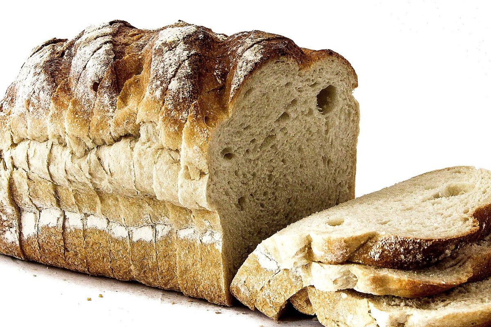
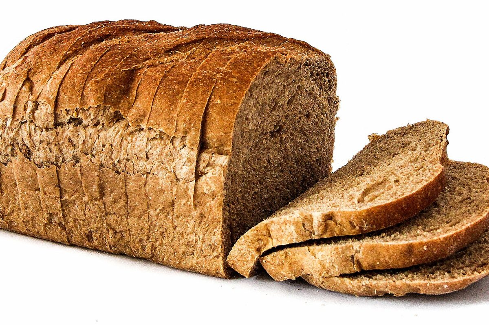

ベーカリー / 静岡県伊東市八幡野
Pain
de loaf
静岡県伊東市八幡野にあるベーカリー「Pain de loaf」のご案内ページです。営業時間やメニューなど、詳しいことは準備中。まずはInstagramをのぞいてみてください。

制作側の連想
屋号から思い浮かべた「焼き色の見本帖」
屋号の由来は分かりません。制作側は「loaf(パンの塊)」という語から、焼き色のちがいを並べた見本帖を連想しました。パン屋さんの扱う商品や得意なことを示すものではなく、お店の理念・由来とは無関係な、制作側の連想です。
こんがり六段階(イメージ)
淡い色から濃い色まで、6つの焼き色。
写真はお店や伊東市のものではなく、国外・撮影地不明のフリー素材です。
- 1ほんのり生地のような、ごく淡い色

ふくらんだ白いパン生地(フリー素材のイメージ) - 2うす色焼き始めの淡いベージュ

薄く色づいた塊のパンと切り分けたスライス(フリー素材のイメージ) - 3きつね色明るい黄金色

木の板に重ねた細長いパン(フリー素材のイメージ) - 4こんがりほどよく深い飴色

オーブンの中で焼けていくパン(フリー素材のイメージ) - 5香ばしめ濃いめの琥珀色

皿に置かれた厚切りのパンとバターの塊(フリー素材のイメージ) - 6しっかり焦げ茶に近い色

濃い茶色の皮のパンと切り分けたスライス(フリー素材のイメージ)
ご案内
お店のこと(確認できたものだけ)
| 所在地 | 〒413-0232 静岡県伊東市八幡野1314-30 |
|---|---|
| 電話 | なし |
| 営業時間 | 準備中 |
| 定休日 | 準備中 |
| ご予約 | 準備中 |
| 駐車場 | 準備中 |
| SNS | Instagram @pain.de.loaf |